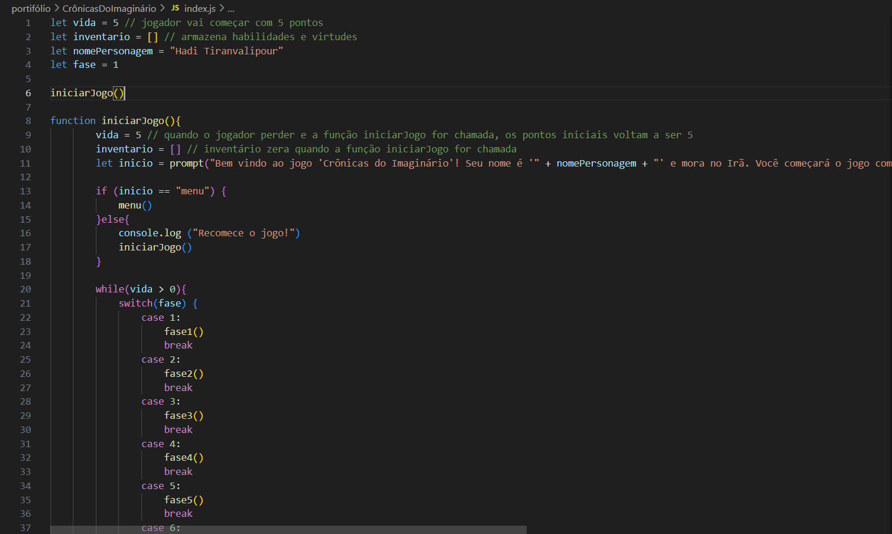

Projeto - Jogo Crônicas do Imaginário
Esse projeto que desenvolvi é um jogo sobre o atleta Hadi Tiranvalipour que faz parte de uma equipe (somente com refugiados de diversos países) que compete nas Olimpíadas. É um jogo de RPG e foi desenvolvido para interagir apenas no console do navegador. Ele mistura ficção e a história real de vida do atleta, onde o personagem passa por diversas situações e faz diversas escolhas até chegar nas Olimpíadas de Paris 2024.
Linguagens utilizadas:
- JavaScript
- HTML
